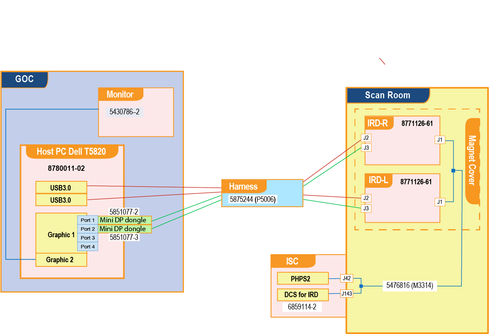
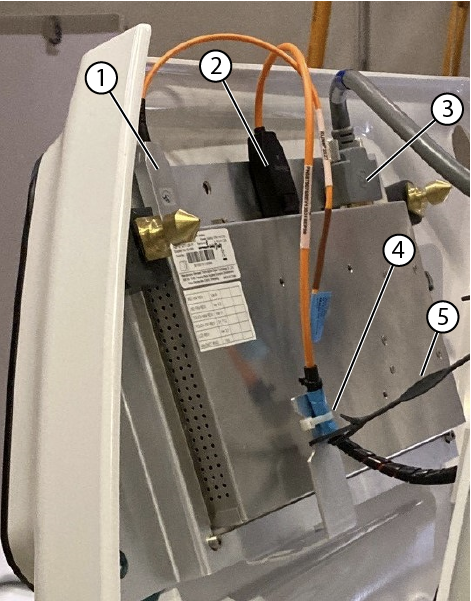
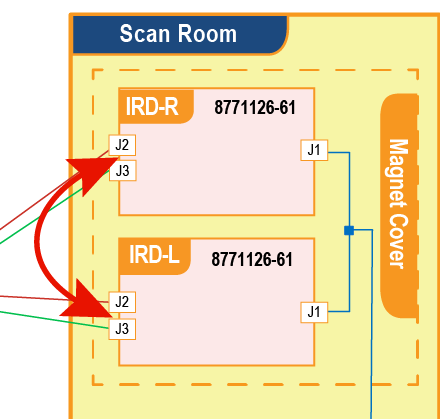
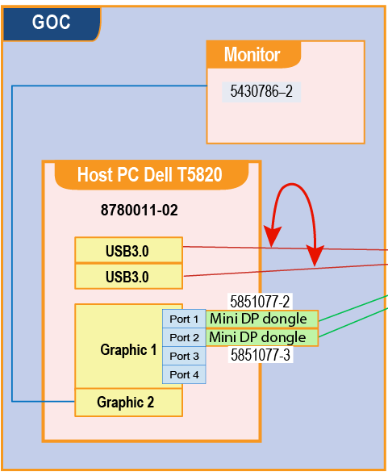
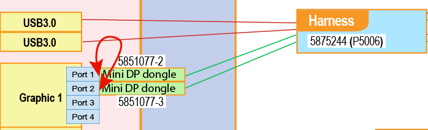
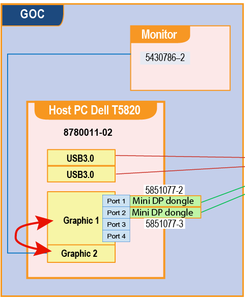
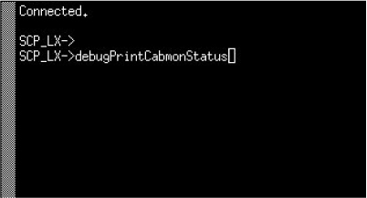

- 00000018WIA30234660GYZ
- id_20320511.57
- Sep 16, 2025 2:45:13 AM
Troubleshooting the In-Room Display (IRD)
Diagnose and fix issues with the IRD screen.
| Notice | |
|---|---|
| Notice | |
|---|---|
Components for this troubleshooting
The following are the main components around the IRD:
| Description | Part number |
|---|---|
| 12.1 inch In-Room Display | 8771126-61 |
| IRD DCPS | 6859114-2 |
| Dell T5820 Host PC | 8780011-02 |
| Run P5006 Cable Harness, GOC to IRD Fiber Optic | 5875244 |
| USB-AOC Fiber Optic Cable, Host PC USB3.0 Port to IRD-Right-J3, Run# P2027 48000 mm, GEN2 | 5778287-8 |
| USB-AOC Fiber Optic Cable, Host PC USB3.0 Port to IRD-Left-J3, Run# P2029 48000 mm, GEN2 | 5778287-9 |
| DP AOC, GOC DP Dongle to IRD Right DP, Run P2026 48000 mm | 5879076 |
| DP AOC, GOC DP Dongle to IRD Left DP, Run P2028 48000 mm | 5879076-2 |
| Mini DP to DP Dongle for Port 1 | 5851077-2 |
| Mini DP to DP Dongle for Port 2 | 5851077-3 |
Block diagram
The following block diagram is used in the theory of troubleshooting throughout this document.

Troubleshooting steps
Make sure the IRDs have power
If there is no power, check the M3314 connections to and .
For systems with remote (off the wall) siting configuration:
- Check the E3314 connections to and .
- Check the E3302 connections to and .
Replace the cables, if necessary.
Make sure that the fiber optic cables are connected
Make sure that the USB fiber optic cables P5006 are properly connected to the correct USB 3.1 ports on the GOC. See IRD Block diagram for more information.
Make sure that the connections are clean
- Disconnect the PHPS power, DP, and USB 3.0 cables from the IRD(s).
- Check the connectors for debris or damage, and clean or replace, if required.
- Reconnect the cables.

| 1 | USB cable |
| 2 | DP cable |
| 3 | Power cable |
| 4 | Tie-wraps |
| 5 | Lanyard |
Make sure that the IRDs are connected to the host PC
Make sure that two displays and two mouse devices are detected by the host PC.
If necessary, re-install the IRM software to resolve problem.
Open Guided Install, select IRM Installation, and then click Install IRM Software to install IRM software.

Resolve issue if one of the IRDs does not work
- Re-install the IRM software and check if the issue is resolved. See Reinstall IRM.
- Swap the malfunctioning IRD and the working IRD.
Follow these procedures to remove the control panel covers:
- Removing the magnet left- and right-hand lower access panels
- Removing the dockable table interface cover
- Removing the magnet left and right control panel covers
Figure 4. Swap IRD Swap the right and left IRD.

If the same IRD is malfunctioning, then replace the IRD. See Replacing the In-Room Display (IRD).
- If the problem moves to the other IRD, the cables or the GOC port might be causing the problem.
- Go to the GOC and make sure that the cables are properly seated and connected as described in the block diagram. If no issues are found, go to the next step.
- For touch-related issues, swap the USB cable connections on the GOC ports.
- If the problem stays on the same IRD, replace the USB cable.
- If the problem moves to the other side IRD, the GOC port might be causing the problem.
- Move the USB connections back to the default ports. Restart the host PC to see if that resolves the issue.
- If the problem is not resolved, connect the USB cable to an open USB port. Restart the host PC to see if that resolves the issue.
- If no open USB ports are available or if the problem is not resolved by restarting the host PC, replace the host PC.
Figure 5. Swap the USB cable on equipment room side to troubleshoot the touch screen Swap the USB cables at the USB ports of the host PC. A hot swap is permitted.

- For display-related issues, swap the mini DP cable connections on the GOC ports including the dongle. Important Handle the cables carefully. The fiber optic cables are easily damaged and have a minimum bend radius of 50 mm.
- If the problem stays on the same IRD, swap the mini DP to DP dongle for port 1 (5851077-2) with the mini DP to DP dongle for port 2 (5851077-3) to examine if the issue is with the dongle.
If the problem stays on the same IRD, replace the cable. Otherwise replace the mini DP to DP dongle.
- If the problem moves to the other side IRD, the GOC port might be causing the problem.
- Move the DP connections back to the default ports. Re-install the IRM software to see if that resolves the issue. See Reinstall IRM.
- If the problem is not resolved, connect the DP cable from the malfunctioning mini DP port to one of the open mini DP ports. Re-install the IRM software to see if that resolves the issue.
- If the problem is not resolved by connecting to an open mini DP port or by re-installing the IRM software, replace the host PC.
Figure 6. Swap the DP cable on equipment room side to troubleshoot the display Swap the DP cables. A hot swap is permitted if you are reusing earlier ports.

Note If cables are moved to new ports, you must reinstall the IRM software. See Reinstall IRM.
- If the problem stays on the same IRD, swap the mini DP to DP dongle for port 1 (5851077-2) with the mini DP to DP dongle for port 2 (5851077-3) to examine if the issue is with the dongle.
Resolve “No signal” message
If both IRDs show No signal, determine if the system has been idle for more than 2 hours. The IRDs can lock due to noise exposure on the video line. When this happens, do the following to power cycle the IRD monitor.
- Press the E-stop button on the SCIM.
- Press the green EMO RESET on the PDU.
Finalization
- If you removed covers, reinstall them:
- Make sure that all system interconnects are returned to normal configurations.
- Do a check scan. See Doing a check scan.
Troubleshooting reference material
Swap the video cable between the graphic cards. A hot swap is permitted.

Enter “debugPrintCabmon” in ICE Term
Refer to Running ice_term to open ice_term window.
Enter debugPrintCabmonStatus.



Check if SRI14V on the PHPS front panel is in spec. (Spec: 13.3~14.7V DC)